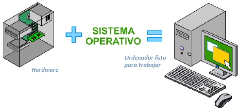
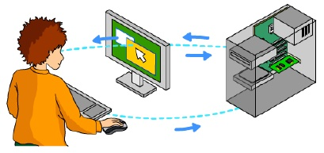
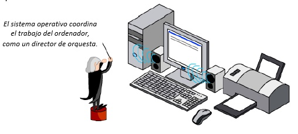
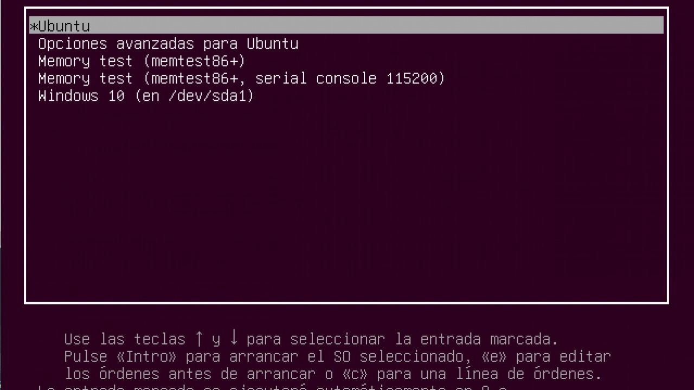
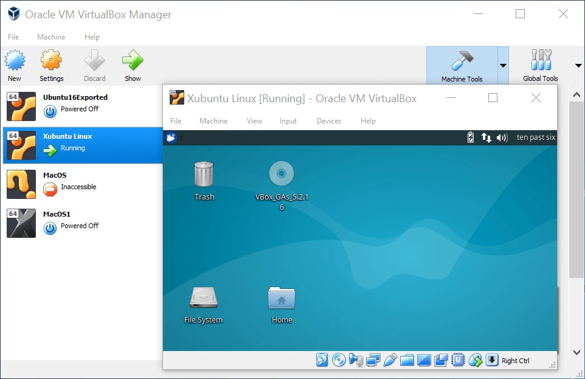
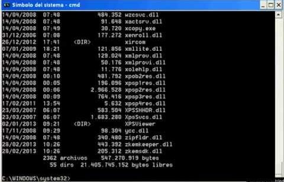
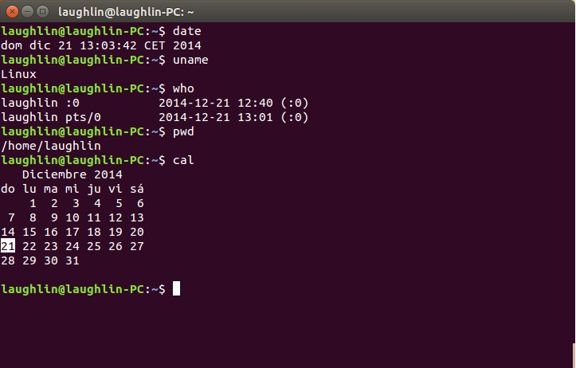
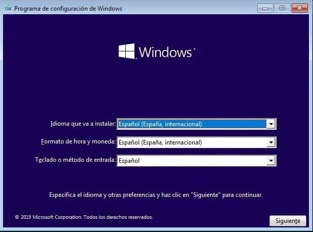
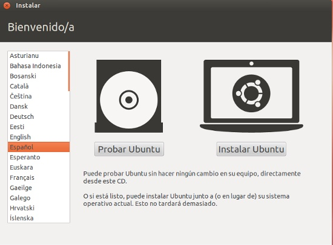

El sistema operativo (SO) es el software principal de un ordenador o cualquier otro dispositivo electrónico, se inicia al encender el equipo, se encarga de gestionar los recursos del sistema (hardware y software) y permite la comunicación del usuario con la máquina.

Los sistemas operativos no solo gestionan ordenadores, sino que se encuentran en todos los dispositivos que utilicen microprocesadores para funcionar: teléfonos móviles, tabletas, libros electrónicos, PDA, reproductores MP4 o MP5, etc. Estos dispositivos deben de disponer de un sistema operativo que permita al usuario navegar por menús y ejecutar las aplicaciones instaladas:
Existen multitud de sistemas operativos: Android, iOS, Symbian OS, Windows, Firefox OS, Ubuntu, MacOS, Red Hat, Ubuntu, Debian, GNU Linux, etc. pero la familia de sistemas operativos Windows es la más utilizada, pues ofrece distintas versiones según el destinatario: servidores, empresas, usuarios personales y dispositivos móviles.
4.1. Tipos de sistemas operativos
Los sistemas operativos pueden clasificarse utilizando diversos criterios:
Existen sistemas monousuario, en los que sólo un usuario puede trabajar con el ordenador en un momento dado (a este grupo pertenecen las primeras versiones de muchos sistemas) y sistemas multiusuario, que permiten la ejecución de procesos u órdenes de varios usuarios a la vez (actualmente casi la totalidad de los sistemas son de este tipo).
Hay sistemas monotarea, que no pueden ejecutar más de un programa a la vez, y sistemas multitarea, que permiten la ejecución concurrente en la memoria del ordenador de varios programas (lo habitual hoy en día es que el sistema sea multitarea).
Hablamos de sistema operativo de red si se ha fabricado para un entorno empresarial o para un servidor de red, es decir, para uno de los ordenadores principales de una empresa u organización (sistema servidor), y hablamos de sistema monopuesto si se trata de un sistema para ordenadores personales.
Distinguimos entre sistemas de software libre o libre distribución (son gratuitos) y sistemas propietarios (cuya licencia se debe pagar, incluida o no en el precio del equipo).
El sistema operativo libre más utilizado es Linux, que tiene varios sistemas operativos derivados como Android y tiene varias versiones, la versión más utilizada hoy día es Ubuntu.
El sistema operativo propietario más usado es Windows, que tiene varias versiones, la versión actual es Windows 10.
4.2. Principales funciones del sistema operativo
Podemos resumir las funciones del sistema operativo en las siguientes:
Proporciona una interfaz de comunicación entre el usuario y la máquina, empleando un lenguaje común (órdenes o comandos) o mediante elementos visuales intuitivos (ventanas, menús, cuadros de diálogo, etc.).

Controla el funcionamiento de los dispositivos (memoria, disco duro, impresoras, etc.) para que los usuarios puedan acceder a ellos y usarlos. Por ello, el sistema necesita configurar y reconocer cada uno de los dispositivos del hardware.

Administra la instalación y ejecución de las aplicaciones del usuario, dotándolas de los recursos de hardware necesarios y controlando los posibles fallos que puedan generar. Gestiona el proceso de almacenamiento de la información en los distintos soportes o discos, así como los movimientos de datos que se realizan entre los distintos componentes del ordenador.
Proporciona medidas de seguridad para que los distintos recursos utilizados por los usuarios y las aplicaciones sigan unos permisos y reglas que impidan un uso accidental o no autorizado.
Los sistemas operativos actuales incluyen numerosas herramientas en forma de programas accesorios: reproductores multimedia, servicios de actualización, complementos para compresión y grabación de archivos, etc.
Cada vez son más los usuarios que disponen de dos sistemas operativos en un mismo equipo. Para hacerlo se necesita particionar el disco duro y tener un programa de arranque que nos permita seleccionar el sistema operativo con el que queramos trabajar. También es posible disponer de un programa que actúe como máquina virtual (como Virtual Box), en el que se instale un nuevo sistema operativo.


Arranque dual con Ubuntu y Windows 10
Ubuntu
T1 - Tarea 7
Continua con el Google Docs de la tarea anterior, copia las preguntas y respóndelas. RECUERDA: La entrega la realizarás una vez terminadas todas las tareas del tema subiéndola en PDF a la plataforma.
¿Qué es un sistema operativo? Nombra algunos.
¿Cuáles son los sistemas operativos más utilizados?.
¿Qué sistema operativo tienes en tu ordenador y en tu móvil?
4.3. El intérprete de comandos
El intérprete de comandos es una aplicación que se utiliza para comunicar al usuario con el sistema operativo mediante la escritura de órdenes que son conocidas por el sistema para la realización de unas tareas.
El usuario escribe un comando u orden que el sistema operativo interpreta para ejecutar una determinada acción.
La respuesta del sistema operativo a esta orden aparece en una nueva línea en la misma ventana. Al intérprete de comandos también se le da el nombre de símbolo de sistema, cmd, consola de comandos o Shell del sistema operativo.
En Windows, el símbolo de sistema utiliza los comandos de MS-DOS, uno de los primeros sistemas operativos para ordenadores personales, que aún subyace en el sistema operativo.


Símbolo del sistema de windows
Bash de Linux
4.4. Instalación de un Sistema Operativo
Por lo general, cuando compramos un ordenador personal, este suele tener el sistema operativo preinstalado, ya sea de forma comercial con Windows o MAC o de forma libre y gratuita con alguna distribución Linux. Sin embargo, en muchas ocasiones nos vemos obligados a formatear el disco duro de nuestro ordenador y a reinstalar de nuevo el sistema operativo. Lo primero que necesitamos para ello es el disco de instalación del sistema.
En el caso de Ubuntu, podemos obtener el archivo .iso en la zona de descargas de su sitio web y posteriormente grabar este archivo .iso en un DVD o en pen-drive, de este modo, ya tendremos un medio de instalación de Ubuntu. Si se trata de Windows, se puede comprar un disco de instalación con su licencia incluida, o bien descargar una versión de prueba, grabarla en un disco y después activarla con nuestra licencia comercial.
Para comenzar una instalación limpia del SO, iniciamos el equipo con el disco de instalación ya colocado en el lector de DVD o con el pen-drive conectado. Para asegurarnos de que se va a leer el disco de instalación antes que nuestro disco duro, debemos cambiar la secuencia de arranque entrando en la BIOS. Cada ordenador tiene su combinación de teclas para entrar en la BIOS; nada más encender el ordenador nos aparece un mensaje durante unos segundos en la zona inferior de la pantalla informando de dicha combinación de teclas, que en la mayoría de los casos suelen ser Esc, Del, Supr, F2 o F10.
Dentro de la BIOS tenemos que cambiar la secuencia de arranque y dejar en primer lugar el lector de DVD o la unidad USB (si estamos utilizando un USB booteable). Tras estos cambios, iniciamos el ordenador y comenzará la instalación del sistema operativo.
Una vez iniciado el sistema desde el disco de instalación, solamente hay que seguir los pasos del asistente de instalación del sistema operativo elegido.
¿Qué es un USB booteable?
Los discos booteables o de arranque contienen unos archivos que son reconocidos en el arranque de los ordenadores para iniciar la instalación del SO. En la actualidad, podemos convertir un pendrive USB en booteable y evitar así tener que grabar un DVD. De este modo, el ordenador, al iniciarse, leerá el USB y comenzará la instalación del SO copiado en el lápiz de memoria. Este USB se utiliza cuando el equipo no dispone de unidad óptica, como en los ultrabooks.
Existen muchas aplicaciones que nos permiten grabar un archive .iso en un pendrive y convertirlo así en booteable, como por ejemplo Universal USB installer.


Pantalla de instalación de Windows 10
Pantalla de instalación de Ubuntu
Los sistemas operativos actuales poseen grandes bases de datos con información sobre los drivers de la mayoría de nuestros dispositivos, por lo que serán reconocidos e instalados sin que tengamos que intervenir. Si existe algún elemento sin drivers, aparecerá en el administrador de dispositivos del panel de control de Windows o en el Administrador de hardware de las preferencias de Ubuntu.